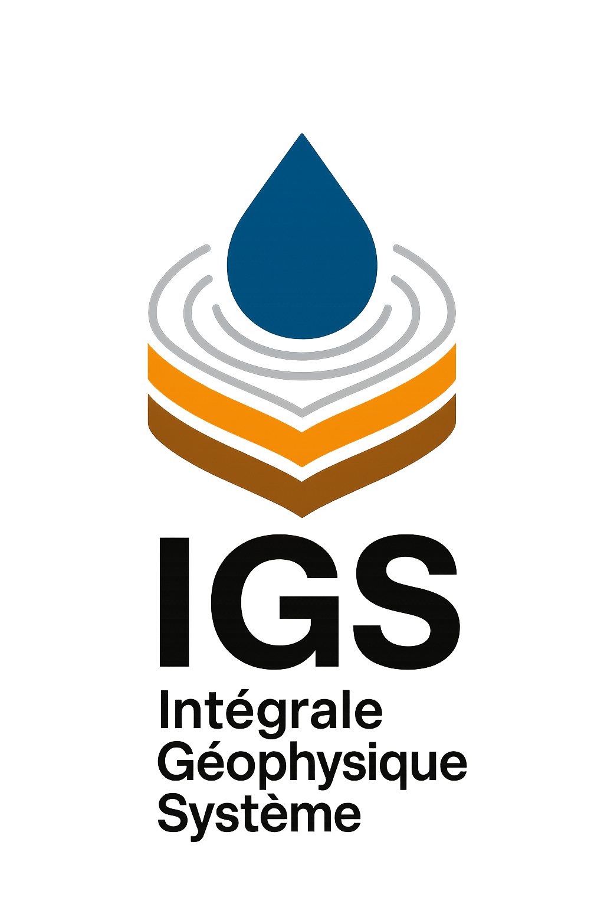

Notre Histoire
INTEGRALE GÉOPHYSIQUE SYSTÈME (IGS) est née de la passion pour l'exploration souterraine et la recherche de solutions durables pour l'accès à l'eau. Depuis notre création, nous nous sommes spécialisés dans la recherche et l'exploration des ressources en eau, devenant un partenaire de confiance pour les particuliers, les agriculteurs et les entreprises.
L'expertise de notre équipe s'est développée au fil des années, nous permettant de maîtriser les techniques les plus avancées de prospection géophysique et d'analyse des sols. Nous comprenons l'importance cruciale des eaux souterraines, que ce soit pour l'achat d'un bien immobilier, le développement agricole ou l'approvisionnement industriel.
